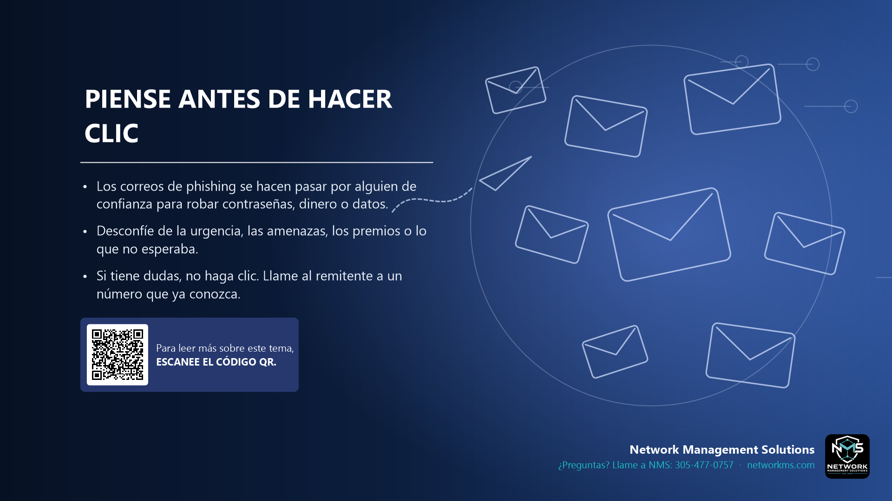

Piense antes de hacer clic

- Los correos de phishing se hacen pasar por alguien de confianza para robar contraseñas, dinero o datos.
- Desconfíe de la urgencia, las amenazas, los premios o lo que no esperaba.
- Si tiene dudas, no haga clic. Llame al remitente a un número que ya conozca.
El phishing es la forma más común de entrar a una empresa. El mensaje parece venir de Microsoft, un banco, una compañía de envíos, un proveedor o hasta un compañero de trabajo.
Señales de alerta: urgencia ("su cuenta se cerrará hoy"), pedidos de contraseña o de pago, un enlace que no coincide con la empresa, mala ortografía o un adjunto que no esperaba.
Si algo le parece raro, deténgase. No abra enlaces ni adjuntos. Comuníquese con la persona o la empresa por un teléfono o sitio web que ya conozca, o llame a NMS.
¿Tiene dudas sobre un correo, mensaje o llamada? Llame a NMS antes de hacer clic: 305-477-0757 · networkms.com